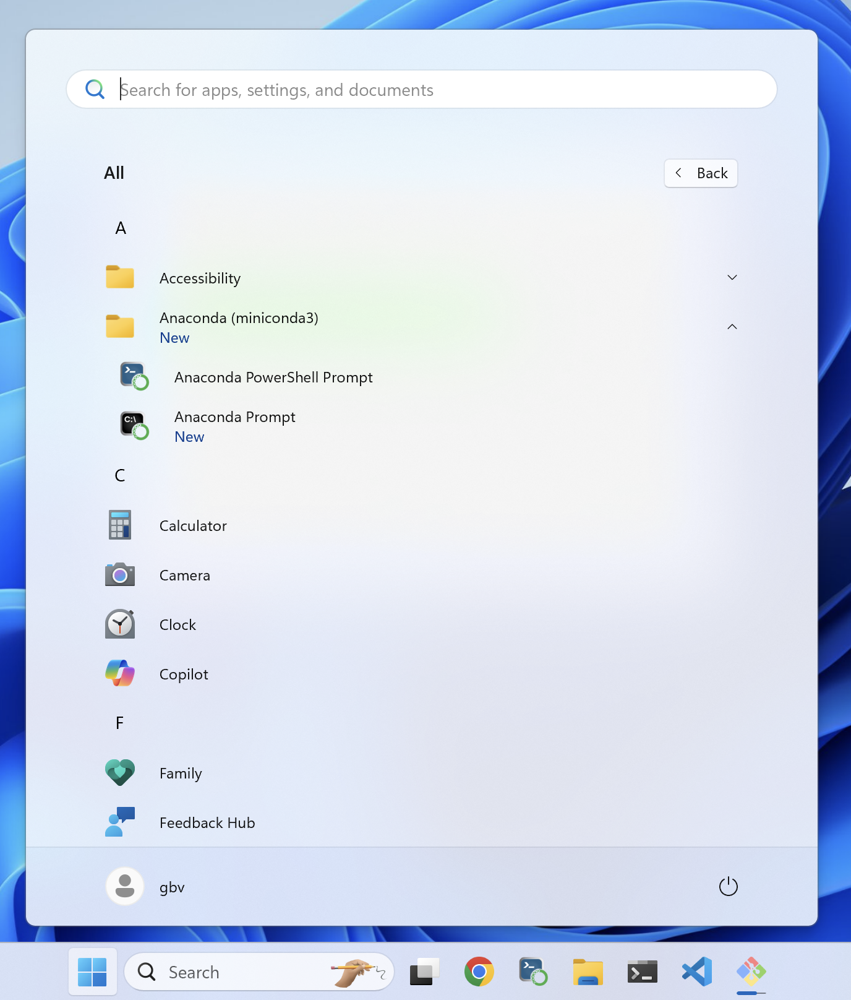
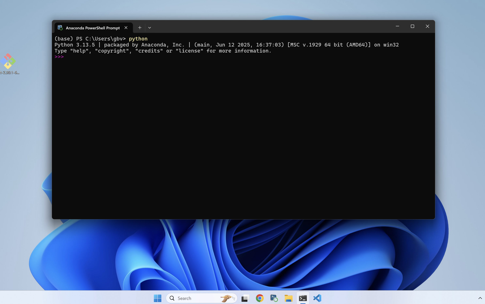

1 Instalar Miniconda en Windows, Linux y macOS
Guía breve en formato Quarto (texto plano)
Por qué usar Miniconda
- Ligero y rápido: instala solo lo esencial (Python + conda).
- Entornos aislados: cada proyecto con sus propias versiones de Python y paquetes.
- Reproducibilidad: puedes fijar versiones y exportar el entorno (conda env export).
- Control de canales: elegir entre defaults o conda-forge según tus necesidades.
- Multiplataforma: funciona en Windows, Linux y macOS (Intel y Apple Silicon).
Miniconda vs Anaconda: Anaconda trae muchos paquetes preinstalados (más pesado). Miniconda es minimalista y tú instalas solo lo que necesitas.
Antes de empezar
- Ten a mano tu terminal:
- Windows: PowerShell de miniconda
- Linux/macOS: Terminal.
Instalación en Windows
https://www.anaconda.com/download/success Opción B (instalador gráfico):
Descarga el instalador de Miniconda para Windows (64-bit) desde la página oficial.
Ejecuta el .exe y sigue el asistente:
- Acepta la licencia.
- Instala solo para tu usuario (recomendado).
- No marques “Add Miniconda to my PATH”.
Ubica la
anaconda power shell

- Abre la terminal y ejecuta
pythonpara verificar la instalación.

Uso de la terminal
Temas a ver: 1. Estructura de la compu. 1. El concepto del /home/Usuario 1. Desktop, Downloads, Documents 1. Recomendación de donde crear los proyectos 1. Recomendaciones de nombres 1. Moverme entre folders 1. Llamar el explorador de archivos
Ambientes virtuales: qué son y por qué usarlos
Definición breve. Un ambiente virtual es una “caja” aislada con su propio Python y paquetes. Así, cada proyecto (o curso) usa EXACTAMENTE las versiones que necesita sin interferir con otros proyectos ni con el Python del sistema operativo.
Idea clave. Piensa en laboratorio: cada experimento usa su propio reactivo y protocolo. Si mezclas frascos, contaminas resultados. Con software pasa lo mismo.
Beneficios para Ingeniería en Energías Renovables
- Reproducibilidad. Puedes rehacer un análisis meses después (o en otro equipo) si documentas el entorno.
- Aislamiento. Evitas choques de versiones: por ejemplo, un proyecto con
pandas 2.2y otro conpandas 1.5.
- Colaboración. Todo el equipo instala lo mismo con un solo archivo; adiós “en mi compu sí corre”.
- Docencia. Cada práctica del curso se entrega con su entorno mínimo: estudiantes instalan y corren sin romper nada.
- Portabilidad. Facilita trabajar en Windows, Linux y macOS (Intel/Apple Silicon) con el mismo conjunto de paquetes.
Ejemplos concretos (ciencia de datos en ER)
- Irradiancia y fotovoltaica (pvlib). Un entorno con
python,numpy,pandas,scipyypvlibpara estimar GHI/DNI/POA, pérdidas y energía AC.
- GIS + datos del INEGI. Un entorno con
geopandas,pyproj,shapely(y a vecesgdal) para unir capas socioeconómicas con clima (ERA5) y visualizar vulnerabilidad energética.
- Aprendizaje automático. Un entorno con
scikit-learn/xgboostpara pronóstico de demanda eléctrica/consumo HVAC; en macOS/Apple Silicon puedes usarpytorchcon backend MPS (Metal) y en Linux con CUDA cuando haya GPU NVIDIA.
Buenas prácticas
- 1 entorno por proyecto/curso. Nombres cortos:
pv-solar-2025,gis-inegi,ml-hvac.
- Evita mezclar
pipyconda. Si necesitaspip, primero instala todo lo deconda, y al final lo que solo exista enpip.
- Bloquea versiones mínimas. Empieza con lo necesario; agrega paquetes conforme avances.
- Documenta el entorno.
conda env export --from-history > environment.yml(captura solo lo que instalaste, no todo el árbol).
¿Qué es uv?
uv es un gestor de proyectos y paquetes para Python, escrito en Rust, pensado para ser “todo en uno”: crea ambientes virtuales, instala dependencias, genera un lockfile reproducible y ejecuta comandos y herramientas (similar a pip, pip-tools, virtualenv, pipx, e incluso gestiona versiones de Python). Su objetivo: ser muy rápido y simplificar el flujo de trabajo.
Por qué importa en cursos y proyectos de ER
- Instalas lo mínimo y vuelas: ideal en laboratorios/docencia.
- Mismo proyecto corre igual en Windows, Linux y macOS con el lockfile.
- Menos fricción al empezar prácticas (GIS, pvlib, ML, Jupyter).
Ventajas de uv para crear ambientes virtuales
- Ambientes por defecto y en segundos
uvtrabaja con ambientes virtuales de forma nativa. Crea uno con:
cd /directorio/proyecto/
uv init # crea espacio de trabajo
# instala programas, solo necesario una vez
uv add jupyter notebook
#corre libreta de Jupyter
uv run jupyter notebook Rapidez (énfasis práctico)
- Resolver e instalar paquetes es mucho más veloz que con pip tradicional (compilado en Rust, caché global y resolución paralela).
- En clase/taller, eso significa pasar de “esperar” a “trabajar”: crear
.venv, instalarnumpy/pandas/scikit-learny abrir Jupyter en segundos, incluso en equipos modestos.
Ejemplo “para el curso” creando carpeta desde el home:
mkdir curso-2026-1 # solo se requiere una vez
cd curso-2026-1 # para entrar a la carpeta
uv init # solo se requiere una vez a menos que se borre el venv
uv add jupyter notebook # solo se requiere una vez por proyecto creado
uv run jupyter notebookTip: la caché global de
uvacelera instalaciones repetidas entre proyectos del mismo curso.
Reproducibilidad fácil (lockfile)
- Lockfile universal (
uv.lock) El proyecto guarda el resultado exacto de la resolución de dependencias (versiones y hashes). Se versiona en Git para que todes instalen lo mismo.
Resultado: el mismo entorno en Windows/Linux/macOS —ideal para prácticas, calificaciones automáticas y trabajos finales.
Buenas prácticas y “gotchas” (Windows/Linux/macOS)
- No mezcles gestores en el mismo entorno (no instales con Homebrew/apt + pip dentro del mismo
.venv). - Jupyter: con
uv run --with jupyter jupyter labusas el entorno del proyecto. Si quieres ver el kernel en VS Code, crea el kernel (ipykernel) como arriba. - Mac ARM vs Intel:
uvgestiona Python por versión/arquitectura; evita mezclar intérpretes del sistema con el.venv. - Linux: no uses el Python del sistema para proyectos (evitas romper herramientas del SO).
- CI/Clases: usa
uv sync --frozenpara asegurar que todes tienen exactamente las mismas versiones.
Objetivo final de la clase
- Tener un ambiente virtual para el uso general del curso
- Instalar jupyter notebook
Hola mundoen Jupyter notebook